01A viagem em duas frases
Um anel anti-horário a partir de Mascate que faz a costa e as tartarugas, entra nas dunas do Wahiba, sobe ao planalto do Jebel Akhdar, atravessa o cinturão de fortes e aldeias abandonadas do interior e fecha no alto do Jebel Shams, com a descida pela pista mais dura do país. Desenhado para três adultos que conduzem à vez, dormem em duas tendas de tejadilho e cozinham por conta própria.
A lógica de custo é o oposto da Namíbia: o país não cobra pelas paisagens e não cobra pelas dormidas. O campismo selvagem é legal em todo o território, a gasolina custa cerca de €0,54 o litro e não há taxas de parque. O único gasto grande em terra é o 4x4 — e mesmo esse divide por três.
GaleriaOs sítios, em fotografia
Imagens de licença livre do Wikimedia Commons. Créditos completos no rodapé.
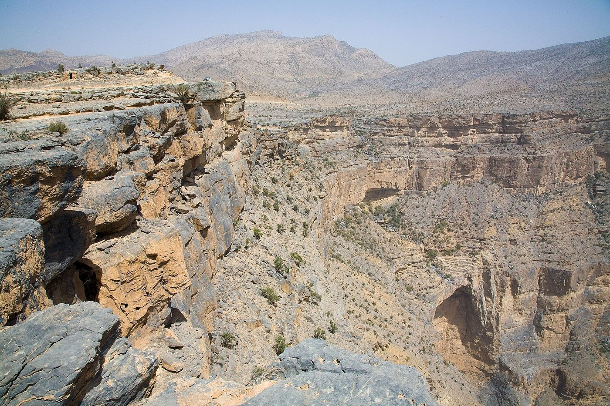
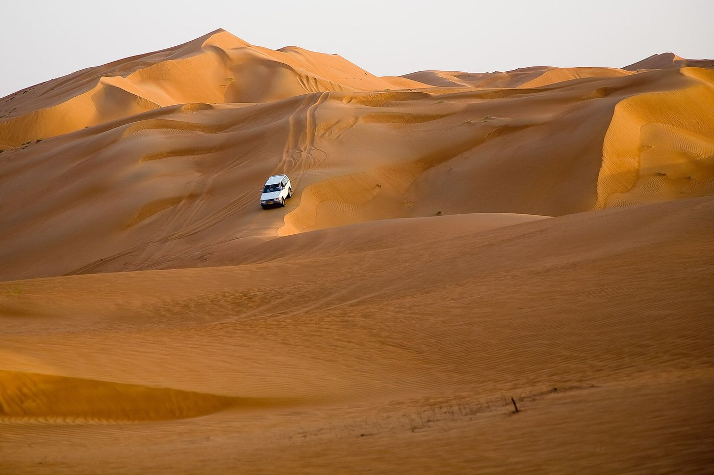
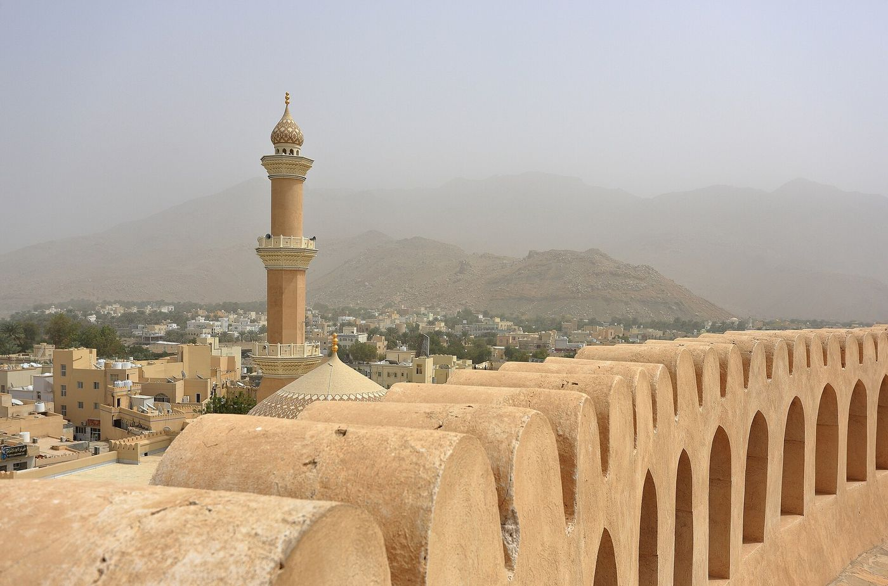
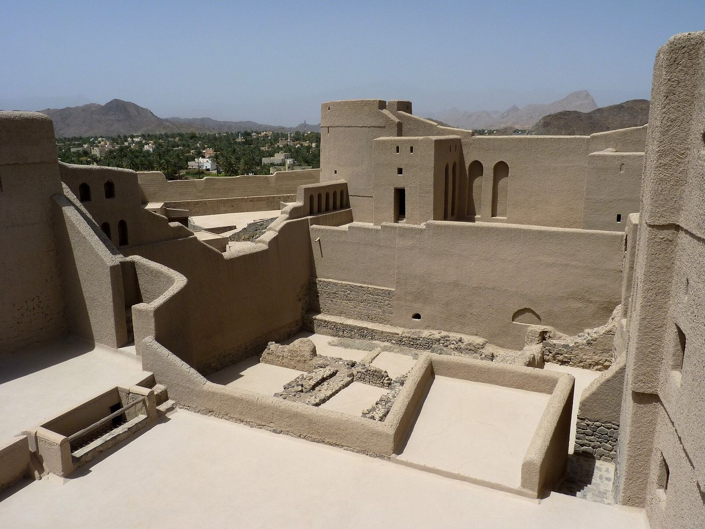
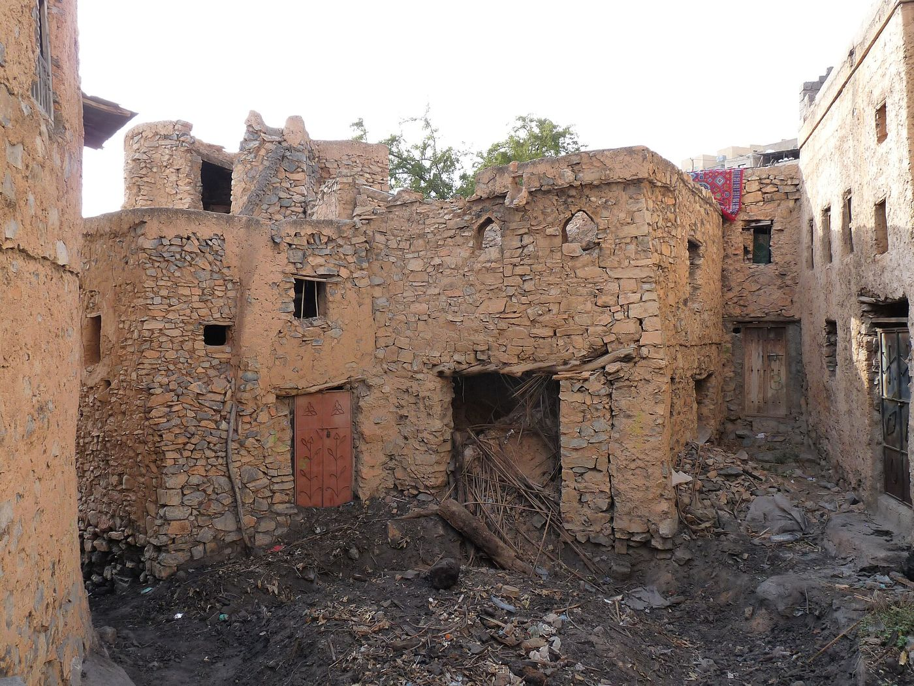
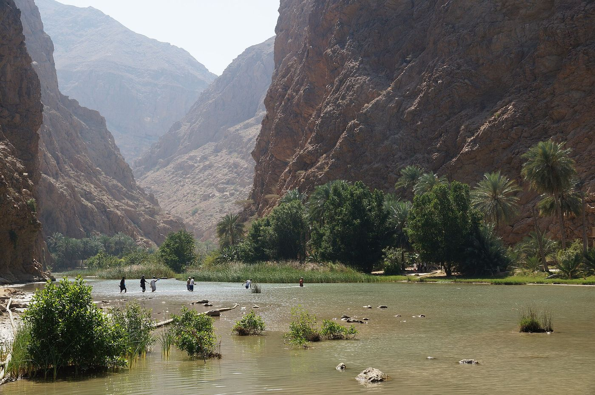
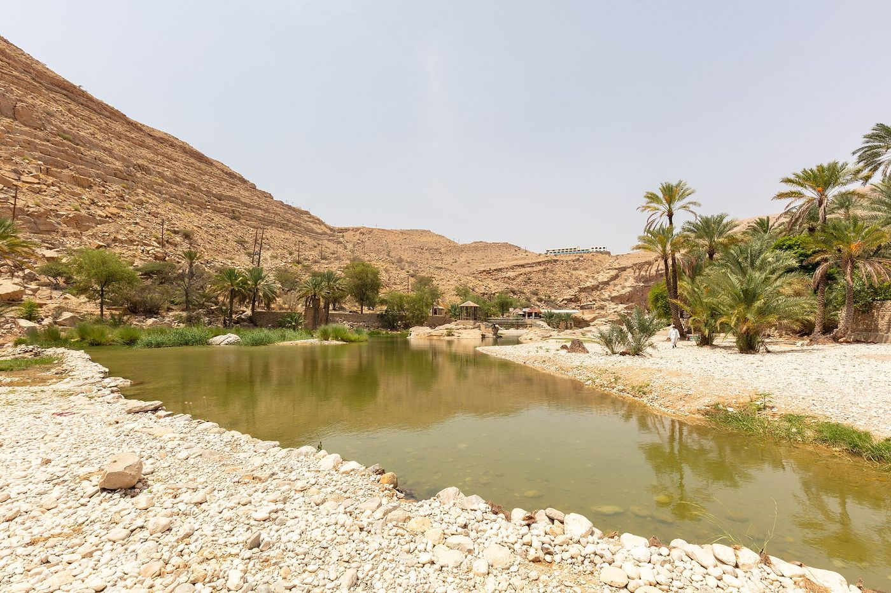
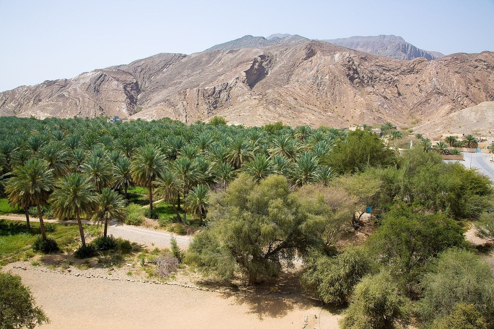
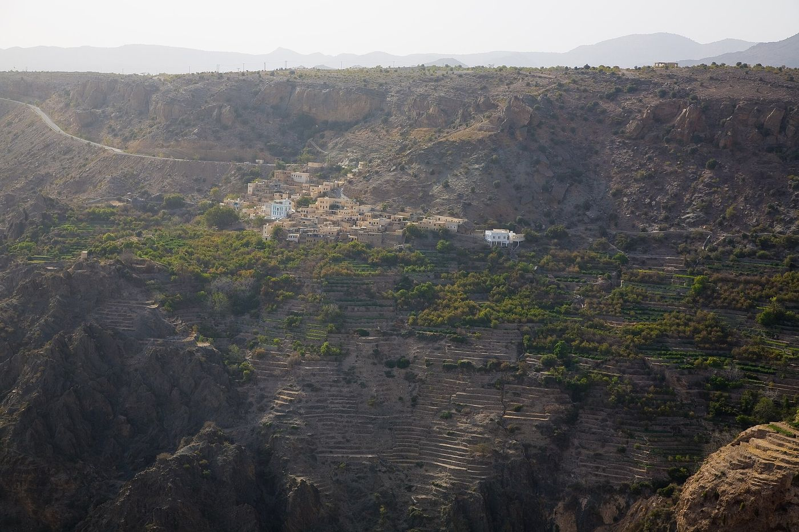
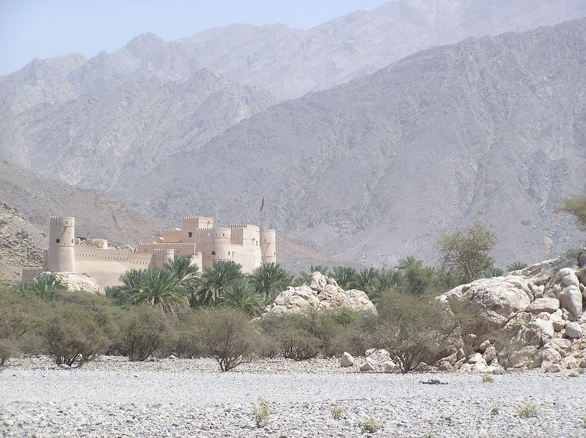
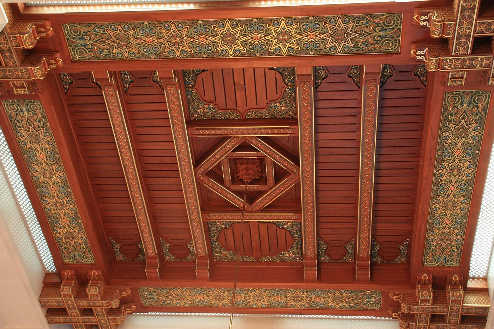
02Itinerário dia a dia
Datas reais, 14 a 28 de dezembro de 2026. Duas regras: parados antes do pôr do sol e troca de condutor a cada duas horas.
Mascate · chegada
Levantar o 4x4 e as duas tendas de tejadilho no aeroporto (contem 1h de briefing — os três assistem, e montem as tendas antes de sair do parque). Grande abastecimento num Lulu ou Carrefour: comida para 4 dias, 30 L de água, gelo. Ao fim da tarde, o souq de Mutrah e a corniche — a única noite urbana da viagem.
Sinkhole e Wadi Shab
Costa sul pela estrada nova: o Bimmah Sinkhole, um poço de calcário colapsado com água verde-turquesa, e depois Wadi Shab — 40 min a pé por entre tamareiras, três lagoas a nado e uma gruta com uma cascata lá dentro onde se entra por uma fenda. Levem sacos estanques. À tarde, encontrar sítio na costa de Tiwi.
Sur e as tartarugas
Sur de manhã: o estaleiro onde ainda se constroem dhows à mão, e a marina. Depois Ras al-Jinz, na ponta leste da Arábia — reserva de desova da tartaruga-verde, com visita guiada nocturna à praia. Dezembro não é o pico da desova, mas há fêmeas a subir a areia durante todo o ano.
Wadi Bani Khalid e as dunas
Interior adentro até Wadi Bani Khalid, o wadi mais fotogénico do país — piscinas naturais esmeralda entre paredes de rocha, e um percurso a montante que perde a multidão em 20 minutos. Ao fim da tarde, entrada no Wahiba Sands: baixar os pneus a ~1,5 bar antes da areia, e escolher um vale entre dunas para acampar.
Wahiba, dia inteiro
O dia sem estrada. Subir dunas ao nascer do sol, encontrar um dos acampamentos de beduínos Wahiba que ainda vivem das cabras e dos camelos, e passar as horas de calor à sombra do carro. Segunda noite no mesmo sítio: não se desmonta nada, e a fotografia ganha duas madrugadas em vez de uma.
Nizwa
Saída das dunas por Al Mintirib, e depois Ibra até Nizwa, a antiga capital do interior. O forte de Nizwa tem a maior torre circular da Arábia e um sistema de defesa com poços de mel a ferver sobre os invasores. O souq ao lado ainda vende cabras às sextas de manhã. À tarde, subida para os contrafortes.
Jebel Akhdar
O Jebel Akhdar a 2 000 m — e há um posto de controlo policial que só deixa passar 4x4, com a subida a 1.ª e 2.ª. Lá em cima: Wadi Bani Habib, uma aldeia de adobe inteiramente abandonada nas encostas, e Al Aqr e Al Ayn, aldeias vivas em terraços de romãs e roseiras regados por falaj com mil anos.
Trilhos dos terraços
Dia de caminhada. O W18 liga as três aldeias dos terraços por um caminho de falaj em cornija — 3h, exposto, espectacular. O W19 desce mais fundo para Wadi Bani Habib. Fim de tarde no miradouro de Diana's Point sobre o desfiladeiro.
Birkat al-Mouz e Bahla
Descida do jebel para Birkat al-Mouz — mais uma aldeia de adobe abandonada, esta com o falaj ainda a correr por dentro das ruínas e um palmeiral por baixo. Depois Bahla, cujo forte de adobe é Património Mundial da UNESCO, e o forte de Jabreen ao lado, com tectos pintados intactos.
Al Hamra, Misfat e Jebel Shams
Misfat al Abriyeen, aldeia de pedra pendurada num palmeiral em terraços — passa-se por túneis entre as casas. Depois Tanuf: uma aldeia bombardeada nos anos 50 durante a rebelião do Jebel e deixada exactamente como ficou, sem cordas nem bilheteira. Ao fim da tarde, a subida ao Jebel Shams (3 009 m), a montanha mais alta do país.
Balcony Walk · véspera de Natal
O W6, ou Balcony Walk: 3h ida e volta numa cornija a meia altura da parede do Wadi Ghul, o "Grand Canyon da Arábia", até à aldeia abandonada de Sap Bani Khamis, encaixada debaixo de um beiral de rocha com o seu próprio falaj. Sem corrimões e com exposição a sério. A véspera de Natal passa-se a 3 000 m, com o canyon a apagar-se.
Descida e Rustaq
Dia de Natal na estrada, com o país fechado e as estradas vazias. Descida pelo lado norte, forte de Rustaq (três andares e uma fonte termal ao lado) e as termas de Ain al-Kasfah a 45 °C. Depois a planície de Batinah até à costa.
Snake Gorge e Bilad Sayt
O dia mais duro de condução, e o melhor. O Wadi Bani Awf sobe por uma pista de terra em cornija — pedra solta, curvas de 180° sobre o vazio, 4x4 com reduzidas obrigatório — até Bilad Sayt, uma aldeia de terraços verdes num anfiteatro de rocha onde a estrada acaba. A Snake Gorge fica a meio: uma fenda de 100 m onde se progride a nado.
Nakhal e regresso
Forte de Nakhal, construído sobre um afloramento rochoso que lhe serve de fundações, e a nascente de Ain A'Thawwarah. Depois Mascate: entregar o gás, lavar o essencial, arrumar. Última noite com duche a sério.
Mascate · partida
Manhã na Grande Mesquita do Sultão Qaboos (abre a visitantes 08h–11h, ombros e pernas cobertos, lenço obrigatório para as senhoras) e no bairro de Mutrah. Devolver o 4x4 à tarde com o depósito cheio. Voo à noite.
03Onde dormir — as 14 noites
Três noites pagas, onze grátis. É isto que torna o Omã barato.
| Noite | Data | Local | Tipo | Custo grupo |
|---|---|---|---|---|
| 1 | 14 dez | Mascate (Mutrah) | Hotel | ~€90 |
| 2 | 15 dez | Costa de Tiwi | Campismo livre | €0 |
| 3 | 16 dez | Ras al-Jinz | Camp da reserva | ~€90 |
| 4–5 | 17–18 dez | Wahiba Sands | Campismo livre nas dunas | €0 |
| 6 | 19 dez | Contrafortes de Nizwa | Campismo livre | €0 |
| 7–8 | 20–21 dez | Jebel Akhdar (2 000 m) | Campismo livre | €0 |
| 9 | 22 dez | Perto de Al Hamra | Campismo livre | €0 |
| 10–11 | 23–24 dez | Jebel Shams (3 000 m) | Campismo livre na borda | €0 |
| 12 | 25 dez | Costa de Batinah | Campismo livre | €0 |
| 13 | 26 dez | Wakan / Nakhal | Campismo livre | €0 |
| 14 | 27 dez | Mascate | Hotel | ~€90 |
04Orçamento
15 dias · 14 noites · 3 adultos · ~2 000 km · 1 OMR ≈ €2,24
| Rubrica | Grupo | Por pessoa | Base |
|---|---|---|---|
| Voo Lisboa–Mascate | €1 950 | €650 | sem cotação ESTIMADO |
| 4x4 simples, 15 dias | €1 441 | €480 | Fortuner/Prado a OMR 38/dia (11+ dias) + sobretaxas de época VERIFICADO |
| Duas tendas de chão, compradas em Mascate | €135 | €45 | ver a nota abaixo ESTIMADO |
| Combustível (~260 L) | €150 | €50 | M95 a OMR 0,239/L VERIFICADO |
| Alojamento (3 noites pagas) | €270 | €90 | ESTIMADO |
| Comida | €675 | €225 | supermercado + poucas refeições fora ESTIMADO |
| Entradas (fortes, Ras al-Jinz) | €240 | €80 | ESTIMADO |
| Visto de 30 dias | €135 | €45 | OMR 20 · obrigatório, ver §05 VERIFICADO |
| Subtotal | €4 996 | €1 665 | |
| Com margem de 10% | €5 496 | ≈ €1 830 |
- RAJ — Fortuner/Prado a OMR 38/dia só o veículo (tarifa de 11+ dias); tendas de tejadilho OMR 12,5–15/dia cada, mais OMR 50–60 de instalação por tenda.
- Oliver — Prado 2.7L a OMR 65/dia já com tenda e equipamento de campismo, mínimo 7 dias.
- Oman Car Hire — tenda dupla a OMR 22/dia mais OMR 20 de instalação, por cima do carro.
O que isso dá, a 1 OMR ≈ €2,2344: 4x4 com duas tendas de tejadilho = €2 608. Na Namíbia o 4x4 equivalente, também com duas tendas, custava €1 305. O dobro.
Duas tendas de chão compradas num Carrefour ou Lulu de Mascate no primeiro dia custam cerca de €135, contra €1 167 de aluguer de tendas pelos quinze dias. Deixam-se ou dão-se no fim. Levar as próprias de Portugal é ainda mais barato, se o excesso de bagagem compensar.
Os três cenários: 4x4 equipado com tejadilho €2 210 p/p · 4x4 simples e tendas compradas em Mascate €1 830 p/p · 4x4 simples e tendas próprias €1 780 p/p. Este orçamento assume o do meio.
05Visto e logística
- Carta de condução — carta portuguesa mais carta internacional (IDP). Registem os três condutores no contrato de aluguer, ou o seguro não cobre quem não estiver no papel.
- Veículo — classe Fortuner ou Prado, com reduzidas, e sem tendas de tejadilho (ver §04: alugá-las duplica o custo do carro). O Jebel Akhdar tem um posto policial que recusa a entrada a quem não seja 4x4 a sério, e o Wadi Bani Awf não se faz sem elas.
- Pneus — descer a ~1,5 bar antes da areia do Wahiba e voltar a encher à saída. Confirmem que o carro leva compressor e duas suplentes.
- Dinheiro — cartão passa quase em todo o lado, mas levem OMR 100–150 em notas para camps, entradas de aldeia e gorjetas.
- SIM — Omantel ou Ooredoo no aeroporto. Cobertura boa nas estradas, inexistente nos wadis fundos.
- Álcool — só em hotéis licenciados. Não se compra em supermercado e não se transporta abertamente.
- Roupa — ombros e joelhos cobertos fora das praias turísticas; lenço para as senhoras na Grande Mesquita.
06Segurança — o que dizem os avisos
O Omã é o destino mais seguro dos três que estamos a comparar, e a diferença não é pequena. O Foreign Office britânico não identifica uma única zona a evitar e classifica a agressão sexual contra estrangeiros como rara. Não há crime relevante contra turistas, não há conflito e não há zonas interditas.
Os riscos são todos ambientais ou de estrada — e portanto dentro do vosso controlo:
- Cheias súbitas nos wadis, de outubro a março VERIFICADO — e dezembro está dentro dessa janela. É o risco número um da viagem. A regra é absoluta: nunca atravessar água em movimento, e não acampar no leito de um wadi se houver nuvens sobre a montanha, mesmo que não esteja a chover onde estão. A água vem de 40 km acima.
- Acidentes de estrada — a taxa omanense é muito superior à europeia, e há camelos e cabras na via. Não conduzir de noite.
- Zonas remotas — o conselho oficial é não entrar em áreas remotas sem 4x4 bem equipado, levar água e comunicações, e deixar o plano do dia com alguém. Já é o vosso método.
- Exposição nos trilhos — o Balcony Walk e o W18 são cornijas sem protecção. Nada de chuva, nada de calçado errado, nada de pressa.
07Meteorologia e roupa
Dezembro é o melhor mês do ano no Omã. Mas há 25 °C de diferença entre a costa e o Jebel Shams à noite.
| Zona | Dia | Noite | Notas |
|---|---|---|---|
| Mascate e costa | 25–28 °C | 19–22 °C | Húmido; mar a 24 °C, dá para nadar |
| Wahiba Sands | 26–30 °C | 14–17 °C | Amplitude grande; vento de areia possível |
| Interior (Nizwa, Bahla) | 24–27 °C | 12–15 °C | Seco, perfeito para caminhar |
| Jebel Akhdar (2 000 m) | 15–19 °C | 4–8 °C | Frio a sério de noite |
| Jebel Shams (3 000 m) | 10–15 °C | 0–5 °C | Pode gelar. Saco de dormir a condizer |
Roupa: verão técnico para 70% da viagem, mais um polar e um corta-vento a sério — três das catorze noites são acima dos 2 000 m e uma delas pode gelar. Calçado de aproximação com sola a agarrar (as cornijas são de calcário polido), sandálias que se possam molhar para os wadis, e fato de banho sempre à mão.
08Quando corre mal
- Chuva na montanha — o Wadi Bani Awf e a Snake Gorge ficam fora de questão, sem discussão. Alternativa asfaltada: descer do Jebel Shams pela estrada de Al Hamra e ir directo a Rustaq e à costa. Perde-se o melhor dia de condução e ganha-se um dia de praia.
- Avaria em pista — ficar com o carro, à sombra e visível. Há tráfego local em quase todas as pistas e a norma cultural é parar para ajudar. Número do rental no vidro, offline.
- Areia mole no Wahiba — desinsuflar mais, pá, placas, e nunca acelerar em pânico. Se o carro assentar no diferencial, escavar em vez de forçar.
- Calor ou cansaço — a viagem tem duas noites repetidas no Wahiba, duas no Akhdar e duas no Shams. Qualquer uma delas absorve um dia perdido sem estragar o resto.
- Se faltar um dia (por causa do visto) — corta-se o dia 05, a segunda noite no Wahiba. É o único dia sem nada de único.
09Veredicto honesto
O que ganha
- Segurança. Nenhuma zona a evitar, crime irrelevante, e os riscos que restam são todos geridos por vocês.
- Tempo. Dezembro é o melhor mês do ano. Não há estação errada nem sorte envolvida.
- Custo. €1 830 por pessoa, contra os €2 640 da Namíbia — e mantém o 4x4 e a autonomia. Mas só com tendas de chão: alugar tejadilho no Omã custa o dobro da Namíbia e mataria a vantagem (ver §04).
- Campismo livre legal. Resolve exactamente a rubrica que tornou a Namíbia insustentável.
- Aldeias abandonadas. Tanuf, Wadi Bani Habib, Birkat al-Mouz e Sap Bani Khamis — quatro, sem bilheteira nem permit.
O que perde
- Fauna grande. Não há Etosha, não há waterhole, não há nada dessa liga. As tartarugas de Ras al-Jinz são o máximo.
- Altitude. 3 009 m no ponto mais alto. Não é o Tian Shan nem o Himalaia.
- Escala do vazio. O Omã é vazio, mas é pequeno — nunca se está a 300 km de uma cidade como na Namíbia.
- O visto. A regra dos 14 dias obriga a burocracia extra ou a cortar um dia.